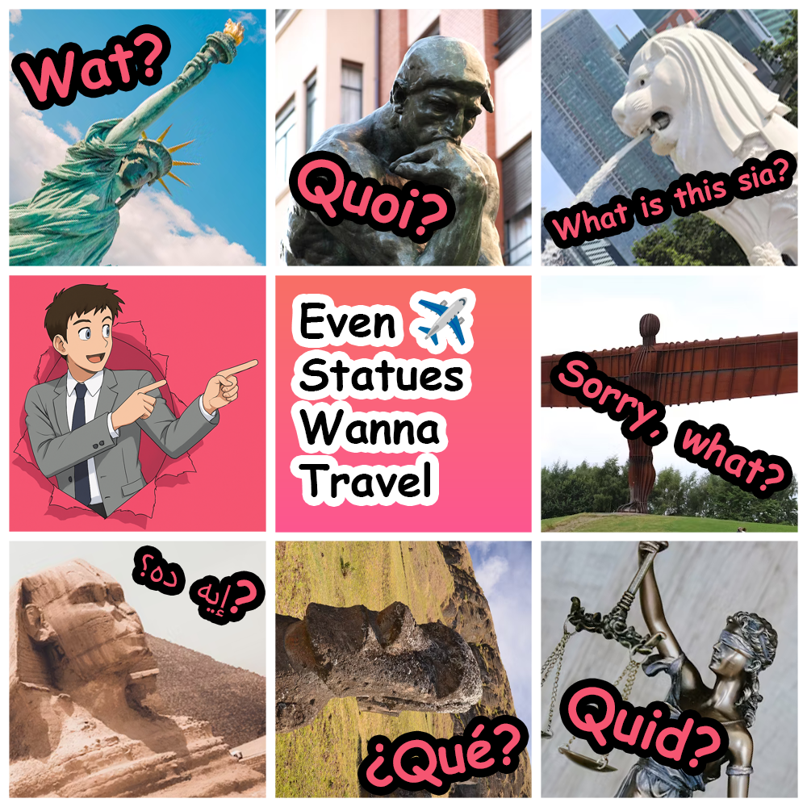
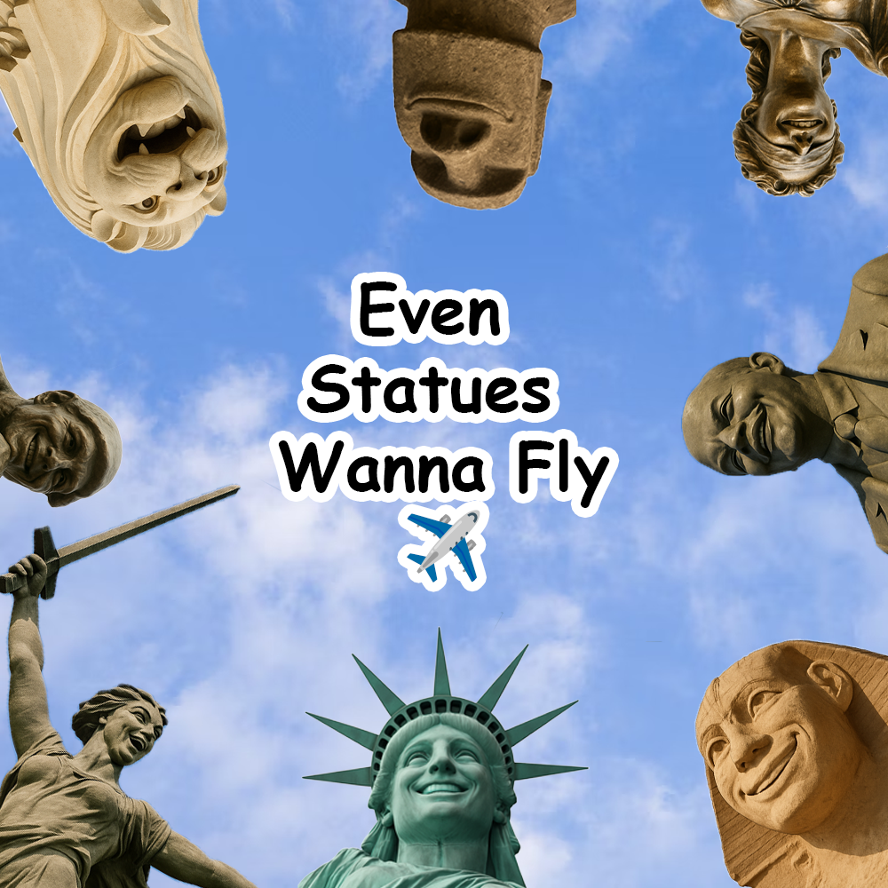

Instagram Grid Banner
Digital Banner

Instagram Grid Banner:
I inserted iconic statues because they are strongly associated with travel destinations.
Positioning them around the centre with humorous reaction text adds personality, irony, and
memorability, as if the statues are “reacting” and coming alive. Using different languages
enhances authenticity and humour, reinforcing the travel theme while making the grid visually
engaging.
Digital Banner:
The concept for this digital banner was inspired by my Instagram Grid Banner, where all statues
are positioned to face the centre. This creates a humorous and engaging effect, as if the
statues are reacting together. The background is a sky illustration, symbolising travel,
openness, and movement. The statues are given smiling, human-like expressions to reflect the
idea that travelling is enjoyable, relaxing, and fun. Personifying the statues makes the banner
more memorable, relatable, and visually entertaining.
References: